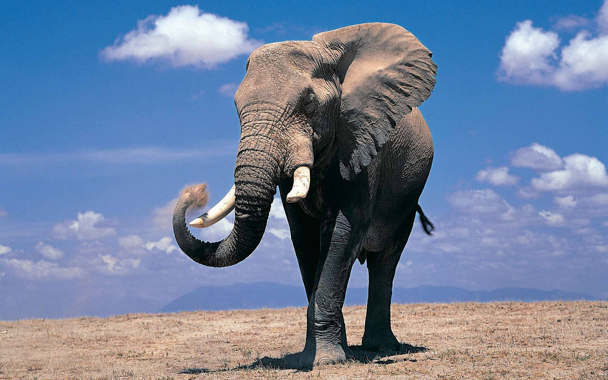
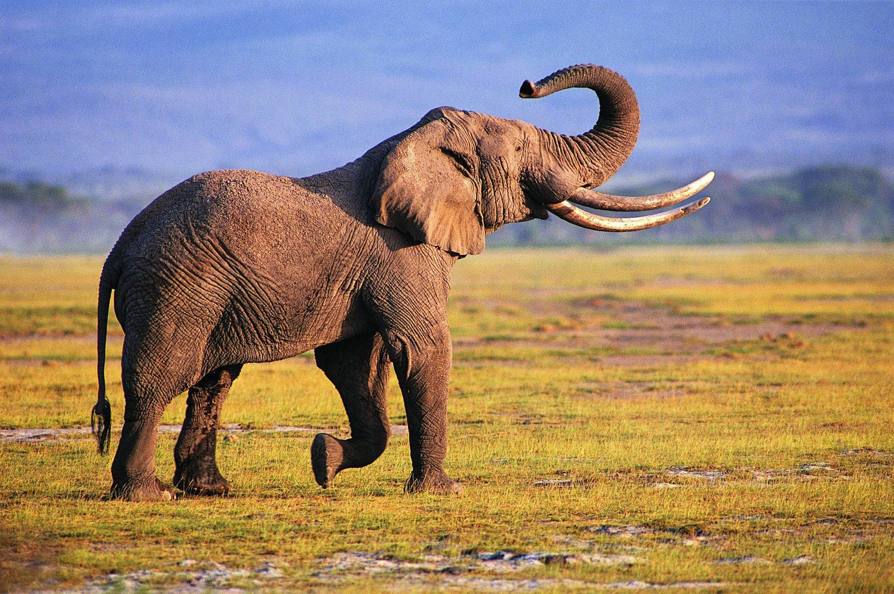

Elefante
Os elefantes são os maiores mamíferos terrestres do planeta, conhecidos por sua impressionante inteligência e complexas interações sociais. Eles habitam principalmente as savanas e florestas da África e da Ásia, com duas espécies principais: o elefante-africano e o elefante-asiático.
Esses gigantes herbívoros se alimentam de uma grande variedade de vegetação, incluindo folhas, frutos, cascas de árvores e grama. Eles também têm uma estrutura social matriarcal, onde os grupos são liderados pela fêmea mais velha, conhecida por sua sabedoria acumulada. A tromba do elefante, uma extensão do nariz, é uma ferramenta multifuncional usada para beber água, manipular objetos e se comunicar.
Infelizmente, os elefantes enfrentam ameaças como a caça furtiva, por causa do marfim, e a destruição de seu habitat, o que torna a proteção dessa espécie uma prioridade global.